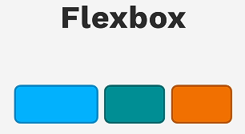
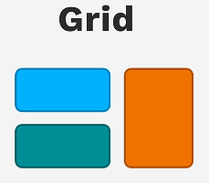

1. Introdução
Cada elemento HTML possui seu próprio layout (formato de seu conteúdo, caixa em que está localizado e como esta mesma caixa é vista pelos demais elementos do documento HTML). Os tipos de display próprio de um elemento podem variar entre ocupar linhas ou blocos inteiros, ou apenas até onde seu conteúdo alcançar.
<div></div><span></span>
<p></p>
1.1 Porque Flexbox e Grid substituem layouts comuns (inline-block, float, etc)?
Com as características dos displays inline, block ou uso do float, torna-se árduo o processo de esquematizar páginas com múltiplas seções e/ou itens dispostos em uma ou mais colunas/linhas, de forma responsiva e dinâmica. Displays Flexbox e Grid permitem criar layouts robustos, organizados e responsivos de forma rápida e fácil, alinhando itens de 'N' formas, com a aplicação de poucas propriedades características de cada Display.
Utilizando Flex
.flex-container {
// Display Flex alinhando horizontalmente os elementos
display: flex;
// Regras visuais e responsividade
flex-wrap: wrap;
gap: 1rem;
background-color: #ddd;
padding: 1rem;
border-radius: 8px;
margin-bottom: 1rem;
}
Resultado:
Utilizando Inline-Block
.inline-container {
// Regras para alinhar e estender o container
display: inline-block;
width: 100%;
// Regras visuais
background-color: #ddd;
padding: 1rem;
border-radius: 8px;
margin-bottom: 1rem;
}
.inline-item {
// Regras para tamanhos e responsividade
display: inline-block;
width: calc(33.333% - 0.66rem);
margin-right: 0.33rem;
// Regras visuais
background-color: #3498db;
color: white;
padding: 1rem;
text-align: center;
border-radius: 4px;
font-weight: bold;
}
Resultado:
1.2 Diferença entre Flexbox e Grid
Display Flexbox é fortemente indicado para elaborar layouts que dispõem seu conteúdo ao longo de uma única direção (vertical ou horizontal); Fortemente usado para elementos como Navbars (barras de navegação) e menus laterais.
Enquanto isso, Display Grid possui vantagem para alinhar elementos ao longo de duas dimensões simultaneamente, elaborando melhor layouts que se assemelham a “tabelas”, linhas x colunas; Fortemente utilizado para agrupar elementos de diferentes tamanhos em um mesmo layout.
2. Flexbox
2.1 Display: Flex
Aplica conceitos de Flexbox para cada elemento que o container principal ser pai - Todos os elementos filhos terão a largura de seu conteúdo, enquanto o flex-container pai ocupará uma linha inteira, sendo visto como um bloco pelos demais elementos.
.flex-container {
display: flex;
}
Resultado:
2.2 Flex-direction
O Flex-direction define a direção em que os elementos que estão dentro do container flex seguirão para ocupá-lo. Por padrão, respeita o fluxo de leitura comum brasileiro: itens dispostos da esquerda para direita, ocupando uma nova linha imediatamente abaixo da atual, caso precise ser quebrada. propriedade colocada no container-pai.
A direção em linha é chamada de eixo `main` (main-axis) - esquerda para direita, enquanto a direção em coluna é chamada de eixo `cross` (cross-axis) - de cima para baixo.
→ Valores mais comuns incluem: row, column.
flex-direction: row
// Valor padrão, faz os elementos do bloco-container-flex se distribuírem em linha
.flex-container {
flex-direction: row;
}
Resultado:
flex-direction: column
// Faz os elementos se distribuírem em coluna, invertendo os eixos main e cross
.flex-container {
flex-direction: column;
}
Resultado:
2.3 Justify-content
Define a distribuição dos filhos flex no decorrer do eixo main, com flex-direction padrão em row será no sentido horizontal, se flex-direction column será vertical; propriedade colocada no container-flex-pai; apenas terá aplicação visual se os filhos flex não ocuparem todo o espaço disponível.
→ Valores mais comuns incluem: flex-start, flex-end, center, space-between, space-around, space-evenly.
justify-content: flex-start
// Alocará todos os filhos flex no começo do eixo main
.flex-container {
justify-content: flex-start;
}
Resultado:
justify-content: flex-end
// Alocará todos os filhos flex no final do eixo main
.flex-container {
justify-content: flex-end;
}
Resultado:
justify-content: center
// Alocará todos os filhos flex no meio do eixo main
.flex-container {
justify-content: center;
}
Resultado:
justify-content: space-between
// Primeiro e último filho flex nos cantos e os demais com espaçamento igual entre si
.flex-container {
justify-content: space-between;
}
Resultado:
justify-content: space-around
// Filhos flex terão espaçamento ao redor deles, inclusive o primeiro e o último filho, mas seu espaçamento equivale a metade dos demais
.flex-container {
justify-content: space-around;
}
Resultado:
justify-content: space-evenly
// Aplica espaçamento nos filhos flex, tanto entre si, quanto entre eles e a página, espaçamento igual para todos
.flex-container {
justify-content: space-evenly;
}
Resultado:
2.4 Align-items
Define a distribuição dos filhos flex no decorrer do eixo cross, com flex-direction padrão em row será no sentido vertical, se flex-direction column será horizontal; propriedade colocada no container-flex-pai; apenas terá aplicação visual se os filhos flex não ocuparem todo o espaço disponível. Para alinhar não podemos ter o flex-wrap definido, precisa estar como nowrap
→ Valores mais comuns incluem: flex-start, flex-end, center, baseline, stretch.
align-items: flex-start
// Alocará todos os filhos flex no começo do eixo cross
.flex-container {
align-items: flex-start;
}
Resultado:
align-items: flex-end
// Alocará todos os filhos flex no final do eixo cross
.flex-container {
align-items: flex-end;
}
Resultado:
align-items: center
// Alocará todos os filhos flex no meio do eixo cross
.flex-container {
align-items: center;
}
Resultado:
align-items: baseline
// Alinha todos os filhos flex de acordo com a linha base do texto
.flex-container {
align-items: baseline;
}
Resultado:
align-items: stretch
// Filhos flex serão esticados até atingir o mesmo tamanho do container pai no eixo cross
.flex-container {
align-items: stretch;
}
Resultado:
2.5 Align-content
Similar ao align-items, no entanto, funciona apenas quando o flex-wrap estiver marcado como wrap; alinha texto da forma que escolhemos quando houver mais de uma linha de acordo com o eixo cross; propriedade colocada no container-flex-pai.
→ Valores mais comuns incluem: flex-start, flex-end, center, baseline, stretch.
align-content: flex-start
// Alocará todos os filhos flex no começo do eixo cross
.flex-container {
flex-wrap: wrap;
align-content: flex-start;
}
Resultado:
align-content: flex-end
// Alocará todos os filhos flex no final do eixo cross
.flex-container {
flex-wrap: wrap;
align-content: flex-end;
}
Resultado:
align-content: center
// Alocará todos os filhos flex no meio do eixo cross
.flex-container {
flex-wrap: wrap;
align-content: center;
}
Resultado:
align-content: baseline
// Alinha todos os filhos flex de acordo com a linha base do texto
.flex-container {
flex-wrap: wrap;
align-content: baseline;
}
Resultado:
align-content: stretch
// Filhos flex serão esticados até atingir o mesmo tamanho do container pai no eixo cross
.flex-container {
flex-wrap: wrap;
align-content: stretch;
}
Resultado:
2.6 Flex-wrap
Utilizado para quando elementos estão transbordando o eixo horizontal (quando flex-direction row); propriedade utilizada no container-flex-pai.
→ Valores mais comuns incluem: nowrap, wrap.
flex-wrap: nowrap
// Alocará todos os itens em uma linha infinitamente
.flex-container {
flex-wrap: nowrap;
}
Resultado:
flex-wrap: wrap
// Se um elemento não tiver o espaço mínimo disponível para estar completo em uma linha, automaticamente ocupará a linha seguinte do container flex
.flex-container {
flex-wrap: wrap;
}
Resultado:
2.7 Gap
Aloca espaço entre os filhos flex dentro do container flex, baseado na direção do eixo main. Propriedade utilizada no container-flex-pai.
→ Valores numéricos, pixels, %, rem, em.
gap
// Aloca espaço entre os filhos flex
.flex-container {
gap: 100px;
}
Resultado:
2.8 Flex-Grow
Fará um elemento aumentar seu tamanho ocupando X porções do pai; se seu tamanho for reduzido de mais, terá o valor estabelecido pelo flex-basis ou tamanho mínimo do elemento, fazendo os itens “transbordarem da tela” se reduzir de mais; Propriedade aplicada aos filhos flex; seu valor padrão é 0; Propriedade combinável com a propriedade flex-basis
→ Valores numéricos.
flex-grow
// Possibilita os filhos flex crescer até ocupar uma X porção do container pai
.flex-item-1 {
flex-grow: 1;
}
.flex-item-2 {
flex-grow: 2;
}
Resultado:
2.9 Flex-Shrink
Propriedade que permite os itens serem comprimidos; Diminui os itens o máximo possível, respeitando o tamanho mínimo do conteúdo. Propriedade aplicada aos filhos flex; Seu valor padrão é 1
→ Valores numéricos.
flex-shrink
// Diminui até que atinjam o valor estabelecido pelo min-width
.flex-item {
flex-shrink: 1;
}
Resultado:
2.10 Flex-Basis
Define o tamanho inicial de um item filho flex baseado no eixo main; Propriedade colocada no filho flex; se combinado com flex-direction row expande a largura dos itens, se combinado com flex-direction column expande a altura dos itens;
→ Valores numéricos.
flex-basis
// Define o tamanho inicial de um item filho flex
.flex-item1 {
flex-basis: 100px;
}
.flex-item2 {
flex-basis: 200px;
}
.flex-item3 {
flex-basis: 300px;
}
Resultado:
2.11 Order
Define a ordem que os filhos aparecem no container flex; Propriedade colocada no filho flex; Por padrão o valor é 0; se todos forem 0 seguirá a ordem listada no HTML
→ Valores numéricos.
order
// Define a ordem de aparição de um filho flex
.flex-item1 {
order: 2;
}
.flex-item2 {
order: 3;
}
.flex-item3 {
order: 1;
}
Resultado:
2.12 Align-self
Serve para aplicarmos um alinhamento diferente em um filho flex, independente de como os demais filhos flex estejam alinhados no container; Propriedade colocada no filho flex; Seus valores envolvem os mesmos de align-items
→ Valores mais comuns incluem: flex-start, flex-end, center, baseline, stretch.
align-self: flex-start
// Alocará o filho flex individualmente no começo do eixo cross
.flex-item {
align-self: flex-start;
}
Resultado:
align-self: flex-end
// Alocará o filho flex individualmente no final do eixo cross
.flex-item {
align-self: flex-end;
}
Resultado:
align-self: center
// Alocará o filho flex individualmente no meio do eixo cross
.flex-item {
align-self: center;
}
Resultado:
align-self: baseline
// Alinha o filho flex individualmente de acordo com a linha base do texto
.flex-item {
align-self: baseline;
}
Resultado:
align-self: stretch
// Filho flex será esticado individualmente até atingir o mesmo tamanho do container pai no eixo cross
.flex-item {
align-self: stretch;
}
Resultado:
3. Grid
3.1 Display: Grid
Display Grid faz com que o container principal tente ocupar toda a largura da página possível, ocupando apenas a altura necessária para dispor seus elementos filhos da forma desejada - Filhos do container grid já nascem com sua altura e largura setados pelas proporções das grid-cells.
.grid-container {
display: grid;
}
Resultado:
3.2 Grid-template-columns
Define o número de colunas e sua largura, de acordo com a forma que for preenchida, sendo definida uma coluna a cada 'espaço' dado; propriedade aplicada no container pai grid.
Grid-template-columns
// Cria 4 colunas com tamanhos baseados nos preenchidos
.grid-container {
grid-template-columns: 200px 300px 100px 500px;
}
Resultado:
3.3 Grid-template-rows
Define o número de linhas e sua altura, de acordo com a forma que for preenchida, sendo definida uma linha a cada 'espaço' dado; propriedade aplicada no container pai grid.
Grid-template-rows
// Cria 4 linhas com tamanhos baseados nos preenchidos
.grid-container {
grid-template-rows: 50px 90px 70px 50px;
}
Resultado:
3.4 Gap
Define o espaçamento entre linhas e colunas grid, simultaneamente; propriedade aplicada no container pai grid
Gap
// Aplica uma distância de 50px entre cada célula grid, tanto em linha quanto em coluna
.grid-container {
gap: 50px
}
Resultado:
3.5 Row-gap
Define o espaçamento entre linhas grid; propriedade aplicada no container pai grid
Row-gap
// Aplica distanciamento entre linhas
.grid-container {
row-gap: 50px
}
Resultado:
3.6 Column-gap
Define o espaçamento entre colunas grid; propriedade aplicada no container pai grid
Column-gap
// Aplica distanciamento entre colunas
.grid-container {
column-gap: 50px
}
Resultado:
3.7 Grid-column
Define o tamanho e localização de um item grid em relação as colunas de um layout grid; Atalho para as propriedades grid-column-start e grid-column-end; propriedade aplicada no filho grid.
Grid-column
// Distribuição de um item grid ao longo de 3 colunas utilizando 'span'
.grid-item1 {
grid-column: 1 / span 3;
}
Resultado:
3.8 Grid-row
Define o tamanho e localização de um item grid em relação as linhas de um layout grid; Atalho para as propriedades grid-row-start e grid-row-end; propriedade aplicada no filho grid.
Grid-row
// Distribuição de um item grid ao longo de 3 linhas utilizando 'span'
.grid-item1 {
grid-row: 1 / span 3;
}
Resultado:
3.9 Grid-area
Define a distribuição de um elemento filho grid ao longo de um display grid; valores relacionados às grid-lines e grid-columns, devendo ser especificados respeitando a ordem: grid-row-start, grid-column-start, grid-row-end, grid-column-end.
Grid-area
// Relaciona o início e o fim do elemento com base nas linhas grid, distribuindo-o em 2 colunas e 2 linhas
.grid-item1 {
grid-area: 1 / 1 / 3 / 2;
}
Resultado:
3.10 Grid-template-areas
Identifica as celulas grid no container principal; Permite a distribuição dos elementos filho grid no layout através de nomes, combinado ao grid-area. propriedade aplicada no container pai grid
Grid-template-areas
// Utiliza layout em string para posicionar elementos em layout grid
.grid-container {
grid-template-areas:
"a a b b b"
"a a c c e"
"d d d d e";
// Filhos grid, cada um com seu respectivo posicionamento
.grid-item1 {
grid-area: a;
}
.grid-item2 {
grid-area: b;
}
.grid-item3 {
grid-area: c;
}
.grid-item4 {
grid-area: d;
}
.grid-item5 {
grid-area: e;
}
}
Resultado:
3.11 Justify-items
Propriedade definida no container grid para alinhar os filhos grid na direção em linha;
→ Valores mais comuns incluem: start, end, center, stretch.
justify-items: start
// Itens alinhados ao começo do eixo main
.grid-container {
justify-items: start;
}
Resultado:
justify-items: end
// Itens alinhados ao fim do eixo main
.grid-container {
justify-items: end;
}
Resultado:
justify-items: center
// Itens alinhados ao centro do eixo main
.grid-container {
justify-items: center;
}
Resultado:
justify-items: stretch
// Itens esticados ao longo do eixo main
.grid-container {
justify-items: stretch;
}
Resultado:
3.12 Align-items
Propriedade definida no container grid para alinhar os filhos grid na direção em coluna;
→ Valores mais comuns incluem: start, end, center, baseline, stretch.
align-items: start
// Itens alinhados ao começo do eixo cross
.grid-container {
align-items: start;
}
Resultado:
align-items: end
// Itens alinhados ao fim do eixo cross
.grid-container {
align-items: end;
}
Resultado:
align-items: center
// Itens alinhados ao centro do eixo cross
.grid-container {
align-items: center;
}
Resultado:
align-items: baseline
// Itens alinhados de acordo com a linha base do texto
.grid-container {
align-items: baseline;
}
Resultado:
align-items: stretch
// Itens esticados ao longo do eixo cross
.grid-container {
align-items: stretch;
}
Resultado:
3.13 Place-items
Propriedade usada em containers grid como um atalho para aplicar respectivamente as propriedades align-items e justify-items; propriedade aplicada no container pai grid; se preenchido apenas um valor, este será aplicado para ambas as propriedades
→ Valores inclusos em align-items e justify-items.
Place-items
// Itens combinados para alinharem-se ao início do eixo cross e ao fim do eixo main
.grid-container {
place-items: start end;
}
Resultado:
3.14 Auto-fit
Valor usado combinado à propriedade grid-template-columns em containers grid para ajustar automaticamente as colunas dentro do container principal, fazendo-as preencherem o espaço que esteja sobrando neste;
Auto-fit
// Utiliza função repeat para criar colunas que se ajustam automaticamente baseadas em uma largura de 300px
.grid-container {
grid-template-columns: repeat(auto-fit, 300px);
}
Resultado:
3.15 Auto-fill
Valor usado combinado à propriedade grid-template-columns em containers grid para criar automaticamente o máximo de colunas possível dentro do container principal, cada uma com seu tamanho baseado na largura especificada em conjunto; se mantém dispondo colunas enquanto houver espaço sobrando no container.
Auto-fill
// Colunas criadas conforme disponibilidade de tamanho do container pai, com uma "coluna fantasma"
.grid-container {
grid-template-columns: repeat(auto-fill, 300px);
}
Resultado:
3.16 Minmax()
Função utilizada combinada à propriedade grid-template-columns em containers grid para definir um tamanho mínimo e máximo de uma coluna, não possibilitando ela ser diminuída ou extendida para além dos valores declarados;
Minmax()
// Tamanho mínimo da coluna definido para 200px e máximo para 500px
.grid-container {
grid-template-columns: minmax(200px, 500px) 200px 200px;
}
Resultado:
4. Comparativo Flexbox vs Grid
| Critério | Flexbox | Grid |
|---|---|---|
| Dimensão | 1 Dimensão (linha ou coluna) | 2 Dimensões (linha e coluna) |
| Alinhamento | Seguindo apenas uma direção | Direções simultâneas de alinhamento complexo |
| Indicado | Para navbars, menus, galeria-carrossel, etc. | Para imagens em galeria, layouts de múltiplas colunas e linhas que transbordam entre si |
Bem vindo ao Exemplo Flexbox X Grid!
A atual seção possui imagens alinhadas em uma grade Grid, com esta legenda disposta em um container flex alinhado em column